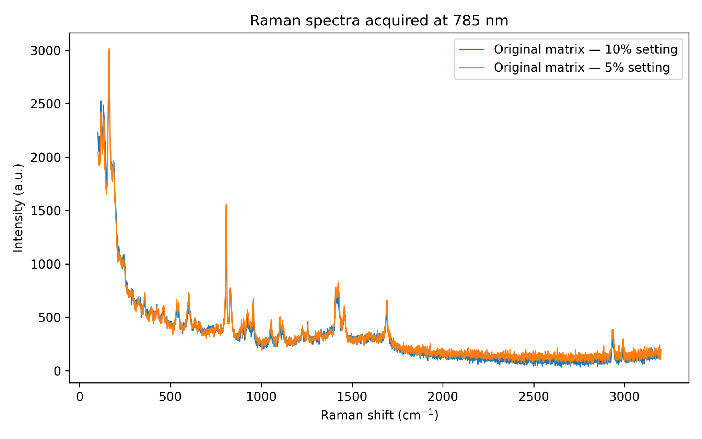
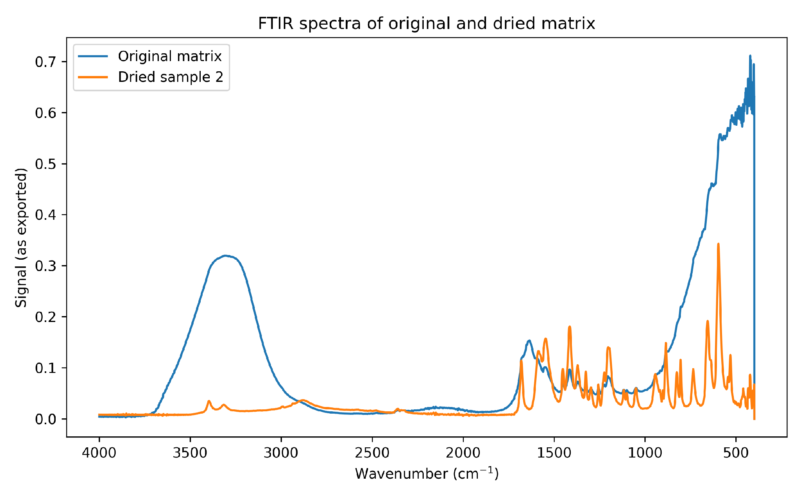
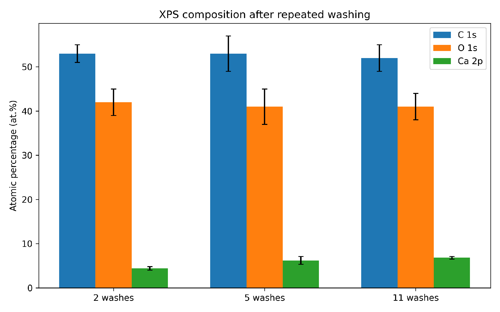
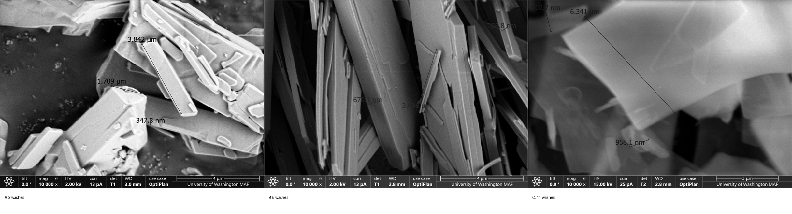
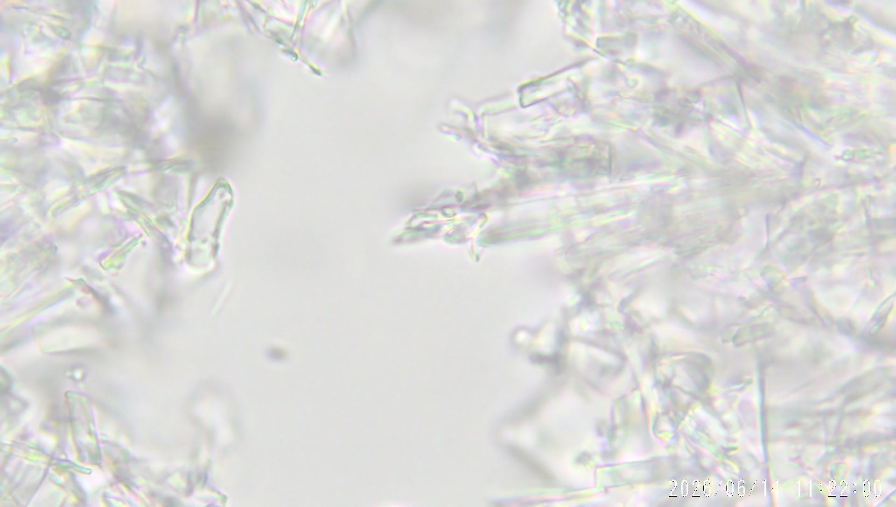
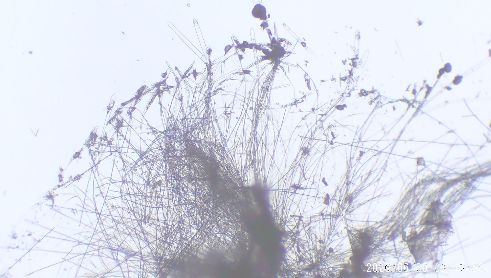

Water compatibility
Pristine fullerenes are hydrophobic; dispersions and functionalization must be controlled.
01 / Research Platform
Exploring fullerene-derived chemistry in a structured, water-rich hydrogel. From molecular building blocks to experimentally observed material behavior.
Research-stage technology. Observed material properties are being independently characterized and validated.

02 / Challenges
Molecular potential alone does not guarantee a practical material. Translating fullerene chemistry into useful aqueous systems requires overcoming several interconnected challenges.
Pristine fullerenes are hydrophobic; dispersions and functionalization must be controlled.
Particle organization can change with pH, ions, concentration, temperature and processing.
Degree of functionalization, residual components and batch variation require quantitative analytical methods.
Drying, rehydration, washing and mixing can change the material's working state.
Biological behavior is dose-, composition- and exposure-dependent and requires application-specific testing.
Identifying the molecular assembly units and the role of calcium remains an open research question for C60(OH).
03 / Applications
Fullerene derivatives serve as electron-transport and electron-accepting materials in photovoltaic and electronic research.
Research includes functional coatings, composites, interfaces, membranes and molecular assemblies.
Functionalized fullerenes are investigated for redox activity, skin interactions and carrier concepts. These are formulation-specific research directions, not established safety or efficacy claims for this hydrogel.
04 / Chemistry
These names describe related but chemically distinct families. Functionalization changes how a carbon cage behaves and where it can be studied or used.
Carbon cages with unusual electron-accepting and optical properties. Investigated in organic electronics, photovoltaics, molecular devices and advanced materials. Pristine C₆₀ is poorly compatible with water.
Hydrogenated fullerene cages containing carbon–hydrogen bonds. Studied in hydrogenation chemistry, hydrogen-storage concepts and functionalization research. They should not be confused with hydroxylated fullerenes.
Hydroxylated fullerene derivatives bearing –OH groups. Functionalization can improve aqueous compatibility and motivates research into redox chemistry, functional composites, skin-focused formulations and delivery systems. Exact composition varies with preparation.
05 / Discovery
In 1985, Harold Kroto, Robert Curl, Richard Smalley and colleagues identified a remarkably stable cluster of 60 carbon atoms. The molecule, C₆₀, forms a closed cage of 12 pentagons and 20 hexagons. Its shape inspired the name buckminsterfullerene, after architect Buckminster Fuller. Kroto, Curl and Smalley received the 1996 Nobel Prize in Chemistry for the discovery of fullerenes.
A new family of closed-cage carbon molecules joins graphite and diamond in the study of carbon allotropes.
Different cage sizes and chemical modifications produce different electronic, optical and surface properties.
The discovery established a new field of molecular carbon chemistry. Nobel Prize reference ↗
06 / Our material platform
C60(OH) Labs has observed formation of a highly hydrated, structured material with distinctive responses to changes in water content and processing conditions.
Typical experimental formulations contain more than 98% water.
Structure formation has been observed under selected acidic preparation conditions.
Samples exhibit changes between hydrated and dried states, with rehydration behavior under investigation.
Material structure has been observed following repeated water-washing experiments.

These are experimental observations, not independently validated performance specifications. Behavior may vary by batch and test conditions.
07 / Analytical characterization
Our completed analytical work uses complementary methods to investigate chemical environments, spectral signatures, and dried-state morphology.

Comparative spectra of original and repeatedly washed samples.

Investigation of infrared features associated with functional groups.

Surface elemental and chemical-state information, including C, O, and Ca.

Microscopy of dried specimens revealing microstructural features.
Images represent available experimental characterization. These techniques do not by themselves quantify fullerene concentration or establish toxicity, efficacy, or in-use stability.
Our research combines repeated material-processing experiments with spectroscopy and microscopy. Part of the analytical work shown here was conducted at the University of Washington Molecular Analysis Facility (MAF). The interpretations and proposed mechanisms are those of C60(OH) Labs, not a certification or endorsement by UW.
Analytical techniques represented in the research record include Raman spectroscopy, ATR-FTIR, XPS, and SEM/EDS. These complementary methods investigate spectral features, surface chemistry, and the morphology of prepared material.
Representative Raman spectra were collected from the original matrix using two acquisition settings. The observed spectral features provide a fingerprint for comparative material analysis; they do not, alone, establish an exact fullerene molecular formula.
Hydrated and dried samples show a pronounced OH-associated spectral region and differences in their infrared profiles, consistent with changes in the local environment upon dehydration.
XPS detected carbon, oxygen, and calcium at the surfaces of dehydrated samples. Calcium remained detectable after repeated washing. Surface elemental composition is not the same as bulk composition or a direct measurement of fullerenol concentration.
Images of dehydrated material reveal plate-like, ribbon-like, elongated, and lamellar micron-scale features. EDS observations identify predominantly C, O, and Ca in examined regions. Dried morphology should not be assumed to represent the native hydrated structure.


In one tracked 11-cycle series, the gel phase re-formed following washing while measured aqueous parameters shifted. These are values from the C60(OH) Labs experimental record.
The values shown are representative measurements, not validated product specifications. Figures are reproduced from C60(OH) Labs’ research manuscript. Part of the analytical work was performed at UW MAF; individual figure provenance should be checked against instrument records before public publication.
Fullerene chemistry spans far beyond hydrogels. These research directions help explain the interest in functionalized carbon cages, but are not demonstrated applications of the C60(OH) matrix.
C₆₀ and C₇₀ derivatives are studied as electron-transport materials and interfacial layers in next-generation solar cells. Current work emphasizes stability, interface chemistry, and device longevity.
Hydroxylated fullerenes are being investigated for interactions with reactive oxygen species in experimental biological models. Activity varies with functionalization, concentration, and conditions.
Functionalized fullerene systems are explored for molecular loading, release, and assembly in water-rich environments. Safety, transport, and reproducibility remain major research questions.
This section summarizes active research themes, not clinical validation. Specific recent discoveries will be linked to peer-reviewed publications after source verification.
10 / Research roadmap
The next phase focuses on quantitative characterization and application-specific evaluation, with safety and functional testing planned rather than presumed.
Validated fullerene quantification, calcium analysis, batch variability, and particle-size assessment.
Rheology, stability, hydration cycling, and material interactions with formulations.
Keratinocyte/fibroblast cytotoxicity, redox assays, and relevant application-specific studies.
11 / Research collaboration
We welcome independent research, formulation evaluation, and collaborative materials development with scientific and industrial partners.
Request a Research Sample →RESEARCH MANUSCRIPT · V4.0
Read the detailed account of matrix formation, sequential washing, microscopy, spectroscopy, calcium-associated behavior and open scientific questions. The manuscript includes selected experimental figures and references.
Read the article (PDF) ↗Research manuscript · C60(OH) Labs · Not a peer-reviewed publication. Analytical work was conducted in part at the University of Washington Molecular Analysis Facility; this does not imply institutional endorsement.